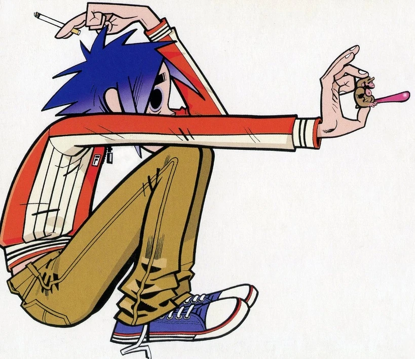
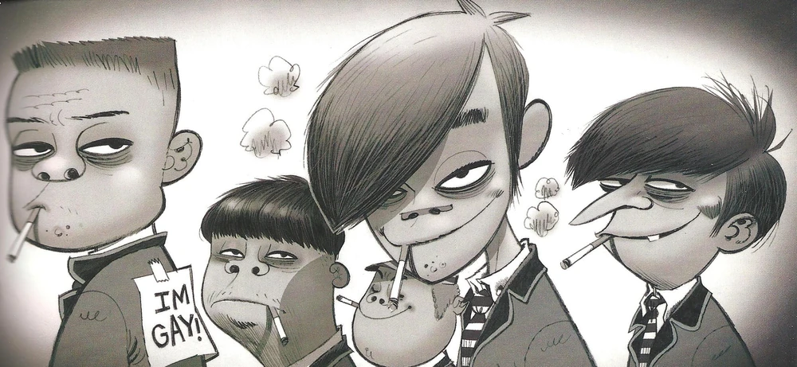
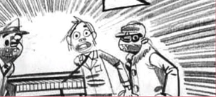
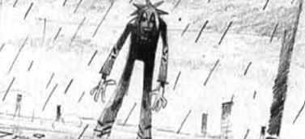
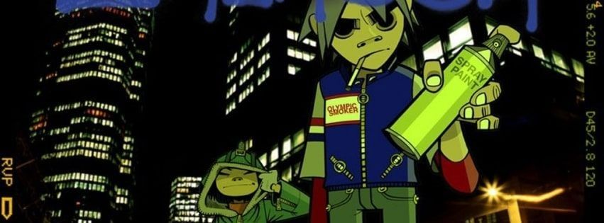

Stuart Harold Pot nasceu em 23 de maio de 1978 na Inglaterra e viveu uma vida normal, tinha amigos na escola, pais classe média e não precisava pensar muito na vida. Toda a normalidade de sua juventude seria recompensada com seu caótico resto de vida no Gorillaz.
Aos 11 anos de idade, Stuart caiu de uma árvore, fazendo com que ele batesse a cabeça e perdesse todos os seus cabelos. Quando eles cresceram de novamente, voltaram da cor azul (sim, o cabelo dele é azul natural). Durante a adolescência, desenvolveu um vício por analgésicos, que piorou depois que se juntou ao Gorillaz. Stuart já quis ser pintor e até tentou cursar direito, mas nenhuma dessas ambições nunca se realizaram.
Em 15 de agosto de 1997, durante uma onda de crimes com um grupo de delinquentes, Murdoc decidiu invadir uma loja chamada Uncle Norm's Organ Emporium para roubar equipamentos musicais para sua futura banda. Ao dirigir seu Vauxhall Astra contra a vitrine, acabou atingindo Stuart Pot, um funcionário da loja que trabalhava meio período e era apaixonado por teclados. O acidente feriu gravemente Stuart, deixando-o em estado catatônico e danificando permanentemente seu olho esquerdo. Como punição, Murdoc foi condenado a prestar 30 mil horas de serviços comunitários, além de cuidar de Stuart por dez horas semanais. Entretanto, durante outra tentativa desastrosa de impressionar algumas mulheres com uma manobra de carro, Murdoc sofreu um segundo acidente, dessa vez em um estacionamento de Nottingham. Stuart foi atingido novamente, machucando o outro olho, mas acabou despertando do coma.
o perceber que os dois acidentes haviam deixado Stuart com seus característicos olhos completamente pretos, Murdoc decidiu recrutá-lo para sua futura banda. Rebatizou-o de 2-D, uma referência aos dois amassados em sua cabeça, e finalmente encontrou um vocalista e tecladista para seu projeto musical.

Em 15 de agosto de 1997, na Uncle Norm's Organ Emporium, a loja de discos quando trabalhava, quando foi atingindo pelo Vauxhall Astra de Murdoc Niccals, um vagabundo que havia tentado roubar a loja.
O carro atingiu diretamente o rosto de Stuart, deixando-o catatônico e danificando o seu olho esquerdo permanentemente, que agora era completamente preto.
Seu agressor foi sentenciado de cuidar de Stuart por pelo menos 10 horas por semana, porém, Murdoc usava esse tempo pra bater a rir da cara de Stuart.
Um dia, os dois estavam andando de carros e, Murdoc, tentando impressionar algumas mulheres, deu um giro violento de 360° graus no veiculo, o impacto fez Stuart quebrar a janela e sair voando do carro, rolando no asfalto por mais de uma milha.
Quando Murdoc foi ver como sua vítima estava, viu que o outro olho de Stuart havia sido danificado. Agora, o jovem tinha duas bolas pretas no lugar dos olhos.
Murdoc viu aquilo como uma oportunidade, com sua nova aparência descolada, Stuart seria o frontman perfeito para sua banda.
Foi nesse momento que ganhou sua famosa alcunha de Murdoc, 2D (2 Dents, “duas amassaduras” do inglês.)


Apesar de toda essa catástrofe, 2D aceitou fazer parte da banda, acreditando que Murdoc o havia salvado noite do 2° acidente, e não o machucado.
Durante sua trajetória na banda, 2D demonstrou a mesma ingenuidade perante a Murdoc e outras pessoas.
Depois de Murdoc encontrar um baterista, Russel Hobbs, a namorada de 2D da época, Paula Cracker se juntou a guitarra e a Gorillaz estava completa. Um dia, o baterista encontrou Murdoc e Paula, no banheiro namorando, acontece que Paula já era namorada de 2d. Russel ficou tão puto que quebrou o nariz de Murdoc. Isso fez com que Paula saísse da banda. 2D, depois de saber da notícia brigou com Murdoc, mas continou na banda.
Procurando um novo guitarrista, fizeram um anúncio onlline.
